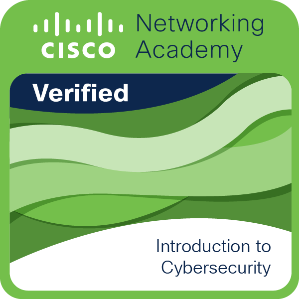
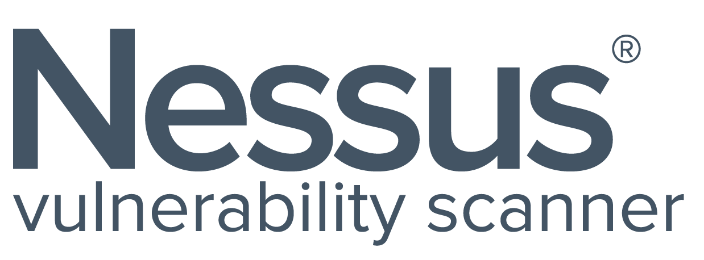
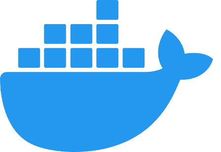

Depuis l'âge de 6 ans, l'escrime fait partie intégrante de ma vie. Ce sport, à la fois exigeant et dans le respect de l'autre, m'accompagne depuis maintenant 13 ans. Très tôt, j’ai été attiré par la discipline, la stratégie et la précision qu’elle demande, et c’est avec passion que je la pratique encore aujourd’hui. Au fil des années, j’ai participé à de nombreuses compétitions, qui m’ont permis de me dépasser, de forger un esprit combatif, de développer une rigueur essentielle et qui m’a appris à m'ouvrir à d'autres cultures, tant sur la piste qu’en dehors. L’escrime m’a appris la persévérance, le respect de l’adversaire, et l’importance de toujours viser l’excellence.
Bienvenue sur mon site personnel
A propos de moi
Je suis étudiant en 2ᵉ année de BUT Réseaux & Télécommunications à l’Université Nice Côte d’Azur, passionné par l’informatique et la cybersécurité.
J’aime analyser et tester les réseaux, progresser en configuration et travailler sur des projets concrets en virtualisation, ce qui me donne une vision globale des systèmes et services.
Persévérant et déterminé, des qualités renforcées par ma pratique de l’escrime, j’applique rigueur, discipline et transmission dans tous mes projets et au sein d’une équipe.
- Nom :Quentin Picot
- Localité :Valbonne, France
- Né le :24/11/2005
- Université :Nice Côte d'Azur - Sophia Antipolis
- Diplôme :BUT Réseau & Télécommunication
- Parcours :
Cybersécurité - E-mail :quentin.picot@etu.univ-cotedazur.fr
- LinkedIn :
Mon profil - GitHub :
Mon profil - Téléphone :+33 6 18 35 07 18
Mes qualités
- Esprit d'équipe
- Créativité
- Dynamisme
Intérêts
- Réseaux
- Programmation (web & app)
- Sport
Parcours
-
2023 - 2027
BUT Réseau
IUT Nice Côte d'Azur Spécialisation Cybersécuri
& Télécom -
2020 - 2023
Baccalauréat STI2D
Lycée Général Technologique et Professionnel Galilée
Portfolio
-
Dans le cadre de ma formation, j’ai réalisé un projet de test d’intrusion sur une infrastructure volontairement vulnérable. Ce travail m’a permis d’identifier et d’exploiter des failles de sécurité, de mettre en place des reverse shells, d’effectuer du pivot réseau et de réaliser une escalade de privilèges jusqu’au niveau root.
Ce projet m’a permis de renforcer mes compétences en cybersécurité offensive, en analyse des vulnérabilités et en rédaction de recommandations de sécurité.
- Catégorie Cybersécurité / Réseaux
- Outils & notions Kali Linux, Nmap, Metasploit, Proxychains, Pentesting, Sécurité réseau
- Lien Rapport (.pdf)
-
Dans le cadre de ce projet, j’ai participé à la conception d’un site web permettant la prise de photos lors de phases de test, leur consultation et leur gestion via une interface dédiée. Le site intègre également une gestion des utilisateurs et des droits d’accès.
Ce projet m’a permis de développer mes compétences en développement web et en gestion de bases de données, notamment avec les technologies PHP et SQL.
- Catégorie Développement web
- Langages utilisés HTML, CSS, PHP, SQL (Base de données)
- Lien Rapport (.pdf)
-
Lors de ma formation j'ai eu l'opportunité de realisé plusieurs programme permettant d'avoir les bases de programations dans ces languages les ameliorant a l'aide de nos projet.
- Catégorie Programmation logicielle
- Langages utilisés HTML, CSS, Python, TypeScript, Node.JS
- Liens utiles
-
Dans le cadre d’un projet de groupe universitaire, j'ai du realisé un réseau informatique pour une petite structure.
Afin d'assurer la connectivité au sein d'un réseau, nous avons mis en place une topologie comprenant trois VLAN connectés à un MLS (Multilayer Switch), lui-même relié à un ASA (Adaptive Security Appliance) et une DMZ. L'ASA est connecté à un FAI (Fournisseur d'Accès Internet) et à un réseau d'entreprise. L'objectif était de respecter le cahier des charges tout en garantissant la sécurité imposée par l'ASA.
Cela m’a permis de revoir certaines notions en réseaux et de monter en compétences sur les systèmes Cisco tout en en prenant de nouvelles, avec par exemple l'asa.
- Catégorie Réseaux
- Notions utilisées Routage, switching, HSRP, OSPF,Firewall,ACL,ASA
- Logiciels utilisées Cisco Packet Tracer
- Lien Rapport (.pdf) Lien Packet Tracer (.pkt)
-
Lors de travaux pratiques, j’ai réalisé des analyses de réseaux et des vérifications de sécurité afin d’identifier d’éventuelles failles de configuration. Ces TP m’ont permis de manipuler des commandes Windows et des outils de diagnostic réseau pour identifier les adresses IP et MAC des machines locales et distantes.
J’ai également mis en pratique des notions de routage, switching et filtrage réseau dans des environnements simulés.
- Catégorie Cybersécurité / Réseaux
- Notions utilisées Scan réseau, Vulnérabilités, CVE, Reverse shell
- Outils utilisés Kali Linux, Nmap, Nessus, Metasploit (MSF), Exploit-DB
- Lien Rapport TP2 (.pdf) Lien Rapport TP4 (.pdf) Lien Rapport Final (.pdf) Lien Rapport 021025 (.pdf)
-
Dans le cadre d'un projet universitaire, j'ai réalisé une analyse technique de mon réseau domestique et de son impact énergétique. Cette étude m'a permis de maîtriser les commandes Windows et les outils d'analyse réseau pour identifier les adresses IP et MAC des machines locales et distantes. J'ai également appris à quantifier l'empreinte carbone de ma navigation internet en corrélant le volume de données échangées à la consommation électrique.
- Catégorie Réseaux
- Notions utilisées Adresses IP/MAC,DNS,DHCP,ICMP,TCP,UDP,Routage,AS,Éco-conception.
- Logiciels utilisées Wireshark,ipconfig,tracert,Interface routeur(Box SFR),BGP.net,DomainTools
- Lien Rapport partie 1 (.pdf) Lien Rapport partie 2 (.pdf)
Dans le cadre de ma formation, j’ai réalisé la conception et l'audit de sécurité d'une infrastructure réseau multi-sites interconnectant plusieurs départements. Ce projet consistait à déployer une architecture robuste intégrant des tunnels VPN IPsec et SSL pour sécuriser les communications distantes, ainsi que du routage dynamique OSPF et de la haute disponibilité avec le protocole HSRP.
J'ai effectué un audit rigoureux des configurations, notamment sur les pare-feu Cisco ASA, pour garantir une segmentation stricte des flux via des DMZ et des listes de contrôle d'accès (ACL). Ce travail a permis d'assurer la résilience du réseau face aux pannes et la protection des services critiques (Serveurs Web, Téléphonie IP) contre les accès non autorisés.
- Catégorie Cybersécurité / Réseaux
- Notions utilisées Cisco ASA, VPN IPsec & SSL (AnyConnect), ACL, NAT/PAT,Routage dynamique OSPF, Redondance HSRP, VLANs
- Logiciels utilisées Packet Tracer,Equipement réel
- Lien Packet (.pkt)
Dans le cadre de ma formation, j'ai du realisé plusieurs travaux pratiques sur VirtualBox et Wireshark.
ce qui nous a permis d'acquerir des compétences plus importantes en gestion et utilidation d'os ainsi que dans l'analyse de nos reseaux
Cela m’a permis savoir utiliser des outils de virtualisation et d'analyse de trafic réseau, essentiels pour la gestion et la sécurisation des réseaux informatiques.
- Catégorie Réseaux / Systèmes
- Notions utilisées Virtualisation, Machines virtuelles, Systèmes d’exploitation,Analyse de trames, Protocoles réseau, Diagnostic réseau
- Outils utilisées VirtualBox,Wireshark
Dans le cadre de ma formation, j’ai réalisé un projet d'étude approfondie sur les systèmes de transmission de télévision par satellite (DVB-S) et par voie hertzienne (DVB-T/TNT). Ce travail m’a permis d’analyser l’ensemble de la chaîne de transmission, de la source binaire jusqu’à la réception finale, en passant par les étapes de codage et de modulation.
J'ai effectué des mesures de performance sur des bouquets numériques réels à l'aide de mesureurs de champ professionnels. L'objectif était de valider la conformité des signaux en analysant les spectres fréquentiels, en mesurant le rapport Signal sur Bruit (C/N) et en évaluant la qualité via le taux d'erreur binaire (BER) avant et après correction (Viterbi et Reed-Solomon).
Ce projet m’a permis de maîtriser les outils de métrologie ainsi que les concepts de modulations numériques (QPSK, 64-QAM).
- Catégorie Télécommunications
- Notions utilisées analyse de spectre, rapport C/N,taux d'erreur CBER,DVB-S (Satellite), DVB-T (Terrestre/TNT), multiplexage de flux,Modulations QPSK et QAM, codage correcteur d'erreurs (FEC), diagrammes de constellation
- Lien Rapport (.pdf)
j'ai pu participer a 2 rencontres avec des Professionnels à l'aide de ce projet
Lors de la premiere rencontres j'ai pu aller à la rencontre d'un militaire SIC (Système d'informations et de communication) dans la base militaire du 21ème régiment d'infanterie de marine située à Fréjus.
Lors de ma seconde rencontre, à la rencontre d'un tech lead de chez Fortinet dans les locaux de Fortinet à Sophia Antipolis.
Ce projet m'a permis d'en connaître plus et de recevoir des conseils sur les choix à faire et les erreurs à ne pas faire.
- Catégorie Communication
Portfolio-
Durant ce projet, nous avions comme missions de créer un site web permettant de prendre des photos lors de phase de test via une interface sur celui-ci, nous pouvons les consulter et pouvoir les gérer, ainsi que les membres accédant au site.
Cela ma permit de me former à les langages PHP, HTML ou CSS, SQL et gestion de Base de Données.
- Catégorie Développement web
- Langages utilisés HTML, CSS, PHP, Base de Données
- Liens utiles
-
Lors de ma formation j'ai eu l'opportunité de realisé plusieurs programme permettant d'avoir les bases de programations dans ces languages les ameliorant a l'aide de nos projet.
- Catégorie Programmation logicielle
- Langages utilisés HTML, CSS, Python, TypeScript, Node.JS
- Liens utiles
-
Dans le cadre d’un projet de groupe universitaire, j'ai du realisé un réseau informatique pour une petite structure.
Afin d'assurer la connectivité au sein d'un réseau, nous avons mis en place une topologie comprenant trois VLAN connectés à un MLS (Multilayer Switch), lui-même relié à un ASA (Adaptive Security Appliance) et une DMZ. L'ASA est connecté à un FAI (Fournisseur d'Accès Internet) et à un réseau d'entreprise. L'objectif était de respecter le cahier des charges tout en garantissant la sécurité imposée par l'ASA.
Cela m’a permis de revoir certaines notions en réseaux et de monter en compétences sur les systèmes Cisco tout en en prenant de nouvelles, avec par exemple l'asa.
- Catégorie Réseaux
- Notions utilisées Routage, switching, HSRP, OSPF,Firewall,ACL,ASA
- Logiciels utilisées Cisco Packet Tracer
-
Dans le cadre d’un projet universitaire, j'ai du realisé une analyse d'un reseau par une verif d'intrusion.
J'ai effectué une étude sur mon réseau domestique et son impact sur l'énergie dans le cadre d'un projet. J'ai aussi acquis des connaissances sur les commandes Windows et les outils Internet pour repérer les adresses IP et MAC des machines locales et distantes.
- Catégorie Réseaux
- Notions utilisées Routage, switching, HSRP, OSPF,Firewall,ACL,ASA
- Logiciels utilisées Cisco Packet Tracer
Dans le cadre d’un projet universitaire, j'ai du realisé une analyse de mon réseau informatique personnel.
J'ai effectué une étude sur mon réseau domestique et son impact sur l'énergie dans le cadre d'un projet. J'ai aussi acquis des connaissances sur les commandes Windows et les outils Internet pour repérer les adresses IP et MAC des machines locales et distantes.
- Catégorie Réseaux
- Notions utilisées Routage, switching, HSRP, OSPF,Firewall,ACL,ASA
- Logiciels utilisées Cisco Packet Tracer
Dans le cadre de ma formation, j'ai du realisé plusieurs travaux pratiques sur VirtualBox et Wireshark.
ce qui nous a permis d'acquerir des compétences plus importantes en gestion et utilidation d'os ainsi que dans l'analyse de nos reseaux
Cela m’a permis savoir utiliser des outils de virtualisation et d'analyse de trafic réseau, essentiels pour la gestion et la sécurisation des réseaux informatiques.
- Catégorie Réseaux
- Notions utilisées Routage, switching, HSRP, OSPF,Firewall,ACL,ASA
- Logiciels utilisées Cisco Packet Tracer
j'ai pu participer a 2 rencontres avec des Professionnels à l'aide de ce projet
Lors de la premiere rencontres j'ai pu aller à la rencontre d'un militaire SIC (Système d'informations et de communication) dans la base militaire du 21ème régiment d'infanterie de marine située à Fréjus.
Lors de ma seconde rencontre, à la rencontre d'un tech lead de chez Fortinet dans les locaux de Fortinet à Sophia Antipolis.
Ce projet m'a permis d'en connaître plus et de recevoir des conseils sur les choix à faire et les erreurs à ne pas faire.
- Catégorie Communication
Compétences-
 Introduction to Networks - Cisco
Introduction to Networks - CiscoCompréhension des bases des réseaux : modèles OSI/TCP-IP, adressage IP et principes de commutation.
Découverte du fonctionnement des réseaux locaux et étendus.
Premières compétences en conception et analyse d’architectures réseau.
certification -
MOOC OSINT-FR
Découverte des méthodologies d’investigation numérique et de la recherche d’informations ouvertes (OSINT).
Utilisation d’outils pour collecter, vérifier et analyser des données publiques.
Développement d’une approche rigoureuse, critique et éthique de l’analyse de l’information.
certification -
 Introduction to Cybersecurity
Apprentissage des fondamentaux de la cybersécurité : menaces courantes, vulnérabilités réseau et bonnes pratiques de protection.
Compréhension des enjeux de confidentialité, d’intégrité et de disponibilité des données.
Première approche structurée de la sécurité des systèmes et des réseaux.
certification -
 Risk Manager - Ebios
Risk Manager - Ebios Maîtrise de la méthode EBIOS Risk Manager pour l’analyse des risques cyber.
Identification des valeurs métier, des sources de menace et des scénarios de risque.
Approche structurée de la gestion et de la réduction des risques numériques.
certification -
 Cisco Packet Tracer
Cisco Packet TracerOutil de simulation pour les réseaux Cisco, utilisé pour la conception et le test de topologies réseau.
-
 VirtualBox
VirtualBoxOutil de virtualisation pour créer des machines virtuelles.
-
LinuxLangage de script côté client pour le développement web.
-

NessusOutil de scan de vulnérabilités utilisé dans le cadre d’audits de sécurité pour identifier les failles connues sur des systèmes et services réseau, analyser leur niveau de criticité et prioriser les actions de remédiation.
-

MetasploitFramework de tests d’intrusion employé pour la validation pratique des vulnérabilités identifiées, la simulation d’attaques et l’analyse de l’impact sécurité sur des infrastructures réseau et systèmes.
-
NmapOutil de scan de vulnérabilités utilisé dans le cadre d’audits de sécurité pour identifier les failles connues sur des systèmes et services réseau, analyser leur niveau de criticité et prioriser les actions de remédiation.
-


HTML5 / CSS3Création et mise en forme de sites web modernes et responsives, en veillant à l’accessibilité et à la compatibilité multi-appareils.
-

BASHscripting shell pour l’automatisation des tâches, l’administration système et la gestion des processus.
-
 SecNum Academy - ANSSI
SecNum Academy - ANSSI Acquisition des bases essentielles de la cybersécurité et de la culture SSI.
Identification des menaces, application des bonnes pratiques et protection des systèmes d’information.
Sensibilisation aux facteurs humains, organisationnels et aux risques numériques.
certification -

Dockerconteneurisation d’applications, isolation des services, déploiement d’environnements de test et de production.
-
Firewall CiscoConfiguration et administration de pare-feu Cisco pour le filtrage des flux réseau, le contrôle des accès, la segmentation des réseaux et la mise en œuvre de politiques de sécurité (ACL, NAT, inspection d’état).
-
 Certification modules RGPD
Certification modules RGPD Maîtrise des principes fondamentaux du RGPD et du cadre légal de la protection des données personnelles.
Compréhension des rôles et des obligations de conformité.
Analyse des enjeux RGPD en entreprise, RH et secteur public
certification -

Active DirectoryConfiguration et administration de l’annuaire Active Directory pour la gestion des utilisateurs, des groupes et des politiques de sécurité.
-
 PHP
PHP
Langage de script côté serveur pour le développement web.
-
 Python
PythonLangage de programmation polyvalent pour divers domaines.
-
 Base De Données
Base De DonnéesGestion et manipulation des données structurées pour le stockage et la récupération efficace.
-
 JavaScript
JavaScript
Langage de programmation pour rendre les pages web interactives.
-
Routage et Switching
Configuration et gestion des routeurs et commutateurs pour assurer la connectivité et l'efficacité du réseau.
-

WiresharkOutil d'analyse de trafic réseau.
-

JavaLangage de script côté client pour le développement web.
-
Modèle TCP/IP
Le modèle TCP/IP regroupe les fonctions réseau en 4 couches :
Accès réseau : gestion de la communication physique et des protocoles de liaison de données.
Internet : routage des paquets IP entre les réseaux.
Transport : gestion de la transmission des données (TCP, UDP).
Application : services réseau pour les applications (HTTP, FTP, SMTP).
-
Modèle OSI
Le modèle OSI regroupe les fonctions réseau en 7 couches :
Physique : transmission des bits sur le support (câbles, signaux).
Liaison de données : communication entre machines d’un même réseau (Ethernet, MAC).
Réseau : adressage et routage des paquets (IP).
Transport : fiabilité et contrôle des flux (TCP, UDP).
Session : gestion des sessions de communication.
Présentation : formatage, chiffrement et compression des données.
Application : services utilisés par l’utilisateur (HTTP, FTP, DNS).
Mes passions-
L’AS Saint-Étienne, c’est plus qu’un club pour moi, c’est une vraie passion. Je les suis depuis que je suis tout petit, je suis né avec le maillot vert sur les épaules. Chaque week-end, je vis au rythme des matchs : la joie, le stress, les cris, les chants, c’est un mélange d’émotions que seul ce club peut me faire ressentir. Même dans les moments difficiles, je suis là, parce que c’est ça aussi, être supporter : croire en son équipe quoi qu’il arrive. L’ASSE me fait vibrer, me fait rêver, et fait clairement partie de ma vie depuis toujours.
-
Je suis supporter de la Karmine Corp depuis ses débuts. C’est une équipe que j'apprécie beaucoup, autant pour son niveau de jeu que pour les valeurs qu’elle transmet. À chaque match, je suis derrière eux, quel que soit le jeu. J’apprécie particulièrement l’énergie qu’il y a autour du club, l’ambiance avec la communauté, et la passion qu’on ressent à chaque rencontre. Même si je ne vis pas uniquement pour l’esport, la Karmine a une vraie place dans mon quotidien. Je les soutiens avec fierté, dans les victoires comme dans les moments plus compliqués.
© 2025